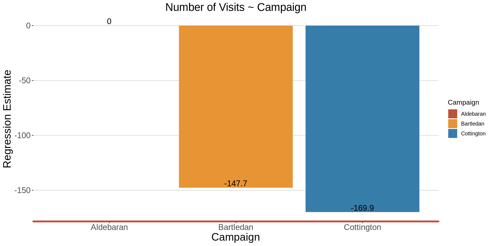

Marketing Intelligence
Company_XXX Case Study

Company_XXX is an online company that meets the growing demand for independent travel information. It offers an extensive hotel meta search to travellers.
The following document details results from the ‘Marketing Intelligence’ data task.
The task involves two datasets i.e Marketing Campaigns and Session data.
The Marketing campaigns data contains weekly information about different online marketing campaigns in one market.
The Session data contains information about single visits to the Company_XXX website (= sessions). A click out is logged whenever a user clicks on a hotel and is redirected to the booking page. The booking field is binary and indicates if a hotel booking was logged after one of the click outs.
### 0.1 Install the libraries required
## Create a vector of packages to be installed
pkgs <- c("tidyverse","data.table","DT","lubridate","ggthemes","randomForest","readODS","ggcorrplot")
## Check if there are packages you want to load, that are not already installed.
miss_pkgs <- pkgs[!pkgs %in% installed.packages()[,1]]
## Installing the missing packages
if(length(miss_pkgs)>0){
install.packages(miss_pkgs)
}
## Loading all the packages
invisible(lapply(pkgs,library,character.only=TRUE))
## Remove the objects that are no longer required
rm(miss_pkgs)
rm(pkgs)### Setting the plot theme
Company_XXX_theme<- theme_hc()+ theme(legend.position = "right",
legend.direction = "vertical",
#legend.title = element_blank(),
plot.title = element_text( size = rel(1.6), hjust = 0.5),
plot.subtitle = element_text(size = rel(1.5), hjust = 0.5),
#axis.text = element_text( size = rel(1.5)),
axis.text.x = element_text(size =rel(1.5),angle = 0),
axis.text.y = element_text(size =rel(1.5),angle = 0),
axis.title = element_text( size = rel(1.55)),
axis.line.x = element_line(size = 1.5, colour = "#c94a38"),
panel.background = element_rect(fill = NA))
### Colours that will be used for the plots
Company_XXX_blue = "#377DA9"
Company_XXX_maroon = "#BB523A"
Company_XXX_yellow = "#E79435"
## Avoidance of scientific numbers
options(scipen = 999)
## Printing function
pr_func<-function(data,cnames){
datatable(data,colnames = cnames,
extensions = 'Buttons', options = list(
dom = 'Bfrtip',
buttons = c('copy', 'print')
)
)
}### 0.2 Read in the datasets
mc_df <- readRDS("../../../../../PersonalDevelopment/marketing_campaigns2.rds")
sessions_df <- readRDS("../../../../../PersonalDevelopment/session_data.rds")Task 1: Marketing Campaigns
Give an overview of entire market’s development and the different campaigns. Please prepare 3-5 charts and summarize the most important findings. See 1.2 - 1.8 below
How would you assess the development of the quality of traffic, e.g. in terms of revenue per visitor. How is the overall development and how does each campaign evolve? See 1.2 - 1.8 below
You are talking with the responsible business developer for the market who wants to spend an additional 250€ per week from week 31 onwards. Please help him out with the following questions:
- What is your advice in which campaign to invest and why? See 1.6 below
- How do you expect this to impact the overall performance in the market from week 31 onwards? See 1.6 below
1.1. Clean the dataset, and generate new variables
## Convert the Campaign variable to factor
mc_df <- mc_df %>%
mutate(Campaign = fct_relevel(Campaign,"Aldebaran","Bartledan","Cottington"))
## Remove duplicates
mc_df <- mc_df %>%
unique()
## Generate a profit variable
mc_df <- mc_df %>%
mutate(Profit = Revenue - Cost)
## Weekly_RPV
mc_df <- mc_df %>%
mutate(Weekly_RPV = Revenue /Visits)1.2 Exploring the trend of visits for each of the campaigns
The Aldebaran campaign seems to have done really well in terms of attracting visitors to the site, all through the campaign period. As much as the number of visits was quite low in the beginning (as compared to the other two campaigns), and with very few dips in the number of visits here and there, there was a good increasing trend overall.
The Bartledan campaign started off at a steady rate, until week 14, where the number of visits to the site picked up a bit till the end.
The Cottington campaign maintained a low but steady state in the number of visits all through the campaign period.
graph <- mc_df %>%
ggplot(aes(x = as.factor(Week), y=Visits, group = Campaign,color = Campaign))+
geom_line(size = 1.1)+
Company_XXX_theme+
scale_color_manual(values = c(Company_XXX_maroon, Company_XXX_yellow, Company_XXX_blue))+
labs(title = "Distribution of the Number of Visits",
x = "Week", y="Number of Visits",color = "Campaign")
graph
1.3 Revenue Per Visitor
RPV is the average revenue per visitor to your website.
Here, we are assuming that a visit represents a unique visitor.
RPV is calculated by dividing the total income by the number of visitors during a specific time period.
We can see that as much the Cottington campaign maintained a low but steady state in the number of visits all through the campaign period (as shown in the previous section), the RPV was the highest, amongst all the three campaigns.
This means that the low number of visitors actually generated higher revenue as opposed to the revene that was generated by the higher number of visitors on the other two campaigns.
graph <- mc_df %>%
ggplot(aes(x = as.factor(Week), y=Weekly_RPV, group = Campaign,color = Campaign))+
geom_line(size = 1.1)+
Company_XXX_theme+
scale_color_manual(values = c(Company_XXX_maroon, Company_XXX_yellow, Company_XXX_blue))+
labs(title = "Weekly Revenue Per Visitor",
x = "Week", y="Revenue Per Visitor",color = "Campaign")
graph
## Generating ROMI
RPV_df <- mc_df %>%
group_by(Campaign) %>%
summarise(RPV = round(sum(Revenue)/ sum(Visits),1))
## Generate the plot
graph <- ggplot(data = RPV_df,
mapping = aes(x = Campaign, y = RPV, fill = Campaign))+
geom_bar(stat = "identity")+
geom_text(aes(label = RPV),vjust = -0.25, size = 5)+
Company_XXX_theme+
scale_fill_manual(values = c(Company_XXX_maroon, Company_XXX_yellow, Company_XXX_blue))+
labs(title = "Overall Revenue Per Visitor",
x = "Campaign", y="Revenue Per Visitor",color = "Campaign")
graph1.4 Assessing profitability of each of the campaigns over the weeks
Here, Profit = Revenue - Cost
In terms of profitability, the Bartledan campaign was the worst performer as it never generated any profit.
The Cottington Campaign was doing well, until Week 20, when it started generating losses.
Coincidentally, Week 20 is the same week that Aldebaran came out of the red, and started generating profits.
graph <- mc_df %>%
ggplot(aes(x = as.factor(Week), y=Profit, group = Campaign,color = Campaign))+
geom_line(size = 1.1)+
geom_hline(yintercept = 0,color="black", linetype = "dashed")+
geom_vline(xintercept = 20,color="red", linetype = "dashed")+
Company_XXX_theme+
scale_color_manual(values = c(Company_XXX_maroon, Company_XXX_yellow, Company_XXX_blue))+
labs(title = "Assessing Weekly Campaign Profitability",
x = "Week", y="Profitability",color = "Campaign")
graph1.5 Assessing Overall Campaign Profitability
Throughout the campaign period, the Cottington campaign is the only one that made a significant amount of profit.
abs_df <- mc_df %>%
select(Week, Campaign, Revenue, Cost) %>%
pivot_longer(cols = Revenue:Cost, names_to ="Revenue_Cost" ,values_to = "Value") %>%
group_by(Campaign,Revenue_Cost) %>%
summarise(Value = round(sum(Value),1))
## Generate the plot
graph <- ggplot(data = abs_df,
mapping = aes(x = Campaign, y = Value, fill = Revenue_Cost))+
geom_bar(stat = "identity", position = "dodge")+
geom_text(aes(label = Value),vjust = -0.25, size = 5, position = position_dodge(width = 1))+
Company_XXX_theme+
scale_fill_manual(values = c("#377DA9","#E79435"))+
labs(title = "Assessing Overall Campaign Profitability",
x = "Campaign", y="Revenue/Cost",color = "Measure")
graph1.6 Return on Marketing Investment (ROMI)
ROMI is an indication of return on investment in marketing.
ROMI = [Total sales - marketing campaign costs / marketing campaign costs]
There is a larger ROMI on the Cottington campaign, as compared to the Aldebaran campaign. The Bartledan resulted into a negative ROMI, even though the number of visits to the site kept on increasing, as the weeks flew by.
I would advise the business developer for the market to invest in the Cotington Campaign. This is because as much as the campaign generally attracts a smaller number of visitors, as compared to the other campaigns, the ROMI is high, and the Revenue per Visitor is also high.
## Generating ROMI
ROMI_df <- mc_df %>%
group_by(Campaign) %>%
summarise(ROMI_abs = (sum(Revenue)-sum(Cost)) / sum(Cost),
ROMI_perc = round(ROMI_abs * 100,2))
## Generate the plot
graph <- ggplot(data = ROMI_df,
mapping = aes(x = Campaign, y = ROMI_perc, fill = Campaign))+
geom_bar(stat = "identity")+
geom_text(aes(label = ROMI_perc),vjust = -0.25, size = 5)+
Company_XXX_theme+
scale_fill_manual(values = c(Company_XXX_maroon, Company_XXX_yellow, Company_XXX_blue))+
labs(title = "Assessing Campaign Profitability \n (ROMI)",
x = "Campaign", y="ROMI (%)",color = "Campaign")+
ylim(-15,5)
graph1.7 Does the type of campaign predict profit?
Company_XXX is likely to obtain a significant profit of 11.2 for an additional investment on the Cottington campaign, as opposed to the investment being made on the Aldebaran campaign.
Company_XXX would make a huge loss (27.6) if it invested cash on the Bartledan campaign.
model1 <- lm(Profit ~ Campaign, data = mc_df)
summary(model1)
Call:
lm(formula = Profit ~ Campaign, data = mc_df)
Residuals:
Min 1Q Median 3Q Max
-56.473 -9.864 1.269 14.199 46.555
Coefficients:
Estimate Std. Error t value Pr(>|t|)
(Intercept) 0.9631 3.6803 0.262 0.7942
CampaignBartledan -27.5866 5.2047 -5.300 0.000000864 ***
CampaignCottington 11.2372 5.2047 2.159 0.0336 *
---
Signif. codes: 0 '***' 0.001 '**' 0.01 '*' 0.05 '.' 0.1 ' ' 1
Residual standard error: 20.16 on 87 degrees of freedom
Multiple R-squared: 0.4038, Adjusted R-squared: 0.3901
F-statistic: 29.47 on 2 and 87 DF, p-value: 0.0000000001693
## Generating a tidy table
model1_tidy <- broom::tidy(model1)
basevalues <- c("CampaignAldebaran",0, 5.204708, 0, 0)
model1_tidy <- rbind(model1_tidy,basevalues)
model1_tidy$term <- gsub("Campaign","",model1_tidy$term)
model1_tidy <- model1_tidy%>% filter(term !="(Intercept)")
model1_tidy <- model1_tidy%>% mutate(estimate = round(as.numeric(estimate),1))
model1_tidy <- model1_tidy%>% rename(Campaign = term)
#model1_tidy$estimate <- round(model1_tidy$estimate)
## Generate the plot
graph <- ggplot(data = model1_tidy,
mapping = aes(x = Campaign, y = estimate, fill = Campaign))+
geom_bar(stat = "identity")+
geom_text(aes(label = estimate),vjust = -0.25, size = 5)+
Company_XXX_theme+
scale_fill_manual(values = c(Company_XXX_maroon, Company_XXX_yellow, Company_XXX_blue))+
labs(title = "Profit ~ Campaign",
x = "Campaign", y="Regression Estimate",color = "Campaign")+
ylim(-30,13)
graph1.8 Does the type of campaign predict number of visits?
model2 <- lm(Visits ~ Campaign, data = mc_df)
summary(model2)
Call:
lm(formula = Visits ~ Campaign, data = mc_df)
Residuals:
Min 1Q Median 3Q Max
-293.667 -33.933 0.233 20.067 292.333
Coefficients:
Estimate Std. Error t value Pr(>|t|)
(Intercept) 320.67 19.14 16.752 < 0.0000000000000002 ***
CampaignBartledan -147.73 27.07 -5.457 0.0000004493 ***
CampaignCottington -169.90 27.07 -6.276 0.0000000131 ***
---
Signif. codes: 0 '***' 0.001 '**' 0.01 '*' 0.05 '.' 0.1 ' ' 1
Residual standard error: 104.8 on 87 degrees of freedom
Multiple R-squared: 0.3486, Adjusted R-squared: 0.3336
F-statistic: 23.28 on 2 and 87 DF, p-value: 0.000000007978
## Generating a tidy table
model2_tidy <- broom::tidy(model2)
basevalues <- c("CampaignAldebaran",0, 5.204708, 0, 0)
model2_tidy <- rbind(model2_tidy,basevalues)
model2_tidy$term <- gsub("Campaign","",model2_tidy$term)
model2_tidy <- model2_tidy%>% filter(term !="(Intercept)")
model2_tidy <- model2_tidy%>% mutate(estimate = round(as.numeric(estimate),1))
model2_tidy <- model2_tidy%>% rename(Campaign = term)
#model2_tidy$estimate <- round(model2_tidy$estimate)
## Generate the plot
graph <- ggplot(data = model2_tidy,
mapping = aes(x = Campaign, y = estimate, fill = Campaign))+
geom_bar(stat = "identity")+
geom_text(aes(label = estimate),vjust = -0.25, size = 5)+
Company_XXX_theme+
scale_fill_manual(values = c(Company_XXX_maroon, Company_XXX_yellow, Company_XXX_blue))+
labs(title = "Number of Visits ~ Campaign",
x = "Campaign", y="Regression Estimate",color = "Campaign")
graph
Task 2: Session data
Test to see if there are any connections between the booking data and any other given information.
2.1 Create additional variables
duration: the length of time taken on the session
start_hour: the hour when the session started.
time_of_day: the time of day i.e Early Morning, Morning, Afternoon, Evening
## Session duration
sessions_df <- sessions_df%>%
mutate(duration = difftime(session_end_text, session_start_text, units = "secs",tz = "EAT"),
duration = ifelse(duration <0, (24*60*60)+duration, duration))
## Start hour
sessions_df <- sessions_df%>%
mutate(start_hour = hour(session_start_text))
## hour_of_day
sessions_df <- sessions_df %>%
mutate(start_hour = as.numeric(start_hour)) %>%
mutate(time_of_day = ifelse(start_hour >=0 & start_hour <=5,"Early Morning",
ifelse(start_hour >=6 & start_hour <=11,"Morning",
ifelse(start_hour >=12 & start_hour <=18,"Afternoon",
ifelse(start_hour >=19 & start_hour <=23,"Evening","")))))2.2 Is there a difference in means of booking, between the different times of day?
H0: The mean of the booking variable, for all the different times = 0
Ha: At least one of the means is not 0
The P-value is very large (>0.05) meaning that the means are not really different from each other, and that this variable is not predictive of the instance of booking.
## Generate anova results
anova_test <- aov(booking ~ time_of_day, data = sessions_df)
summary(anova_test)
Df Sum Sq Mean Sq F value Pr(>F)
time_of_day 3 0.1 0.03623 0.415 0.742
Residuals 9996 873.4 0.08737
TukeyHSD(anova_test)
Tukey multiple comparisons of means
95% family-wise confidence level
Fit: aov(formula = booking ~ time_of_day, data = sessions_df)
$time_of_day
diff lwr upr p adj
Early Morning-Afternoon 0.001126106 -0.01967051 0.02192273 0.9990396
Evening-Afternoon 0.007688625 -0.01407098 0.02944823 0.8006404
Morning-Afternoon 0.006476426 -0.01419107 0.02714393 0.8520366
Evening-Early Morning 0.006562519 -0.01597362 0.02909866 0.8774553
Morning-Early Morning 0.005350320 -0.01613322 0.02683386 0.9190753
Morning-Evening -0.001212199 -0.02362924 0.02120484 0.99904342.3 What is the correlation between the continuous variables?
There is no correlation between the ‘booking variable’ and any othe variables. Meaning none of the variables can predict booking.
## Generate the correlation matrix
corr_mat <- cor(sessions_df %>% select(booking, clickouts, duration, start_hour))
corr_mat
booking clickouts duration start_hour
booking 1.0000000000 -0.049811677 0.01044032 0.0009995598
clickouts -0.0498116772 1.000000000 0.03979617 -0.0077694714
duration 0.0104403163 0.039796170 1.00000000 0.0154922952
start_hour 0.0009995598 -0.007769471 0.01549230 1.0000000000
## Generate the p-values of this correlation matrix
p.mat <- cor_pmat(corr_mat)
p.mat
booking clickouts duration start_hour
booking 0.0000000 0.5628733 0.6811493 0.6836681
clickouts 0.5628733 0.0000000 0.7530925 0.6518106
duration 0.6811493 0.7530925 0.0000000 0.6746880
start_hour 0.6836681 0.6518106 0.6746880 0.0000000## Generate the correlation plot.
ggcorrplot(corr_mat,
outline.col = "white",lab = TRUE,
ggtheme = Company_XXX_theme,
colors = c(Company_XXX_maroon, Company_XXX_yellow, Company_XXX_blue),
title = "Correlation Plot")